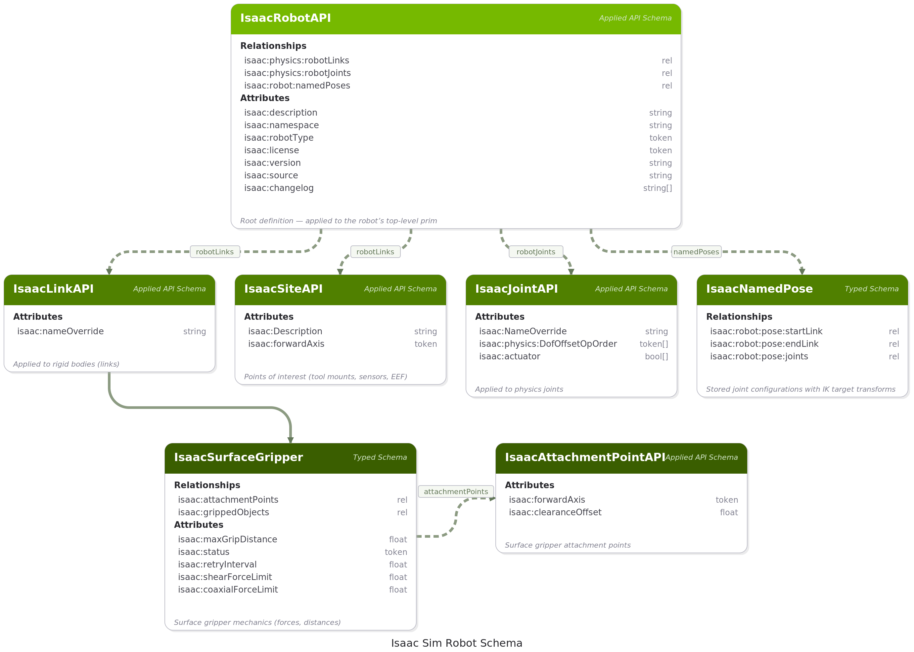
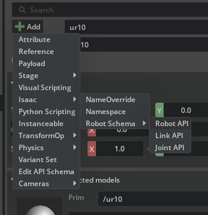
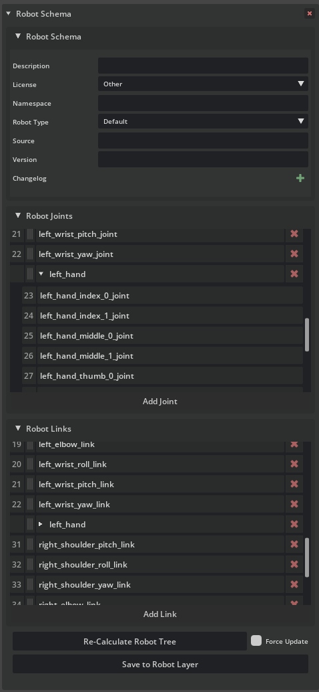
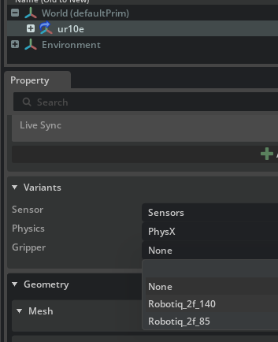
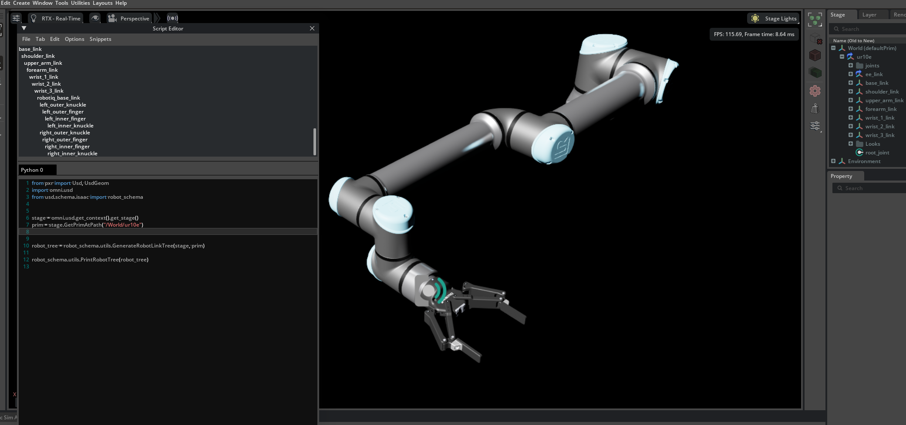

Robot Schema#
The Robot Schema extends OpenUSD with a set of applied API schemas that describe robotic structures in a standardized, composable way. It builds on USD Common definitions and the Physics Schema for kinematic tree definitions, providing the canonical representation for robots in Isaac Sim.
The schema is implemented across two extensions:
isaacsim.robot.schema– Schema definitions, application helpers, and programmatic utilities for traversing and maintaining robot structures.isaacsim.robot.schema.ui– Interactive Robot Inspector Window for viewing robot kinematic trees in multiple display modes, selectively masking and bypassing components, anchoring links to the world, and visualizing joint connections in the viewport.
Schema Overview#
The Robot Schema defines five applied API schemas and two typed schema:
Schema |
Purpose |
|---|---|
IsaacRobotAPI |
Root definition applied to the robot’s top-level prim. Holds metadata and ordered lists of links and joints. |
IsaacLinkAPI |
Flags a rigid body (or other simulated body) as a link in the robot composition. |
IsaacJointAPI |
Flags a physics joint as part of the robot composition and carries DOF ordering information. |
IsaacSiteAPI |
Marks a point of interest on the robot (tool mount, sensor location, end-effector frame). |
IsaacAttachmentPointAPI |
Defines attachment points used by surface grippers. |
IsaacNamedPose |
Typed prim schema storing a named joint configuration with an IK target transform, used by the Robot Poser. |
IsaacSurfaceGripper |
Typed prim schema for surface-gripper mechanics (grip forces, distances, retry behavior). |
{kind=link}

Robot API#
IsaacRobotAPI is applied to the robot’s root prim and serves as the single source of truth for the robot’s composition and metadata.
Relationships
Relationship |
Description |
|---|---|
|
Ordered list of links that compose the robot, starting with the base link. May include sites interleaved after their parent links. |
|
Ordered list of joints connecting the links. |
|
List of IsaacNamedPose prims defining stored joint configurations for the robot. |
Attributes
Attribute |
Type |
Description |
|---|---|---|
|
String |
Free-form text describing the robot’s purpose and capabilities. |
|
String |
Unique namespace identifier used for component messaging. |
|
Token |
Category of robot, such as |
|
Token |
License under which the robot asset is distributed. |
|
String |
URL or reference to the original asset source. |
|
String |
Semantic version number of the robot asset. |
|
String[] |
Ordered list of change descriptions across asset revisions. |
Note
The Links and Joints lists need only contain elements relevant for reporting. The full kinematic tree may contain additional elements not present in these lists.
Link API#
IsaacLinkAPI is applied to each body that participates in the robot composition. It acts as a flag indicating that the prim should appear in robot state reporting.
Attribute |
Type |
Description |
|---|---|---|
|
String |
Optional custom name used instead of the prim name when reporting robot state. |
Links are not restricted to rigid bodies. The API can be applied to deformable bodies or other simulation types, though computing robot state from non-rigid links requires custom handling.
All links that belong to the robot must have IsaacLinkAPI applied, regardless of whether they appear in the IsaacRobotAPI links list.
Joint API#
IsaacJointAPI is applied to physics joints that participate in the robot composition. It flags the joint for inclusion and carries DOF ordering information.
Attribute |
Type |
Description |
|---|---|---|
|
String |
Optional custom name used instead of the prim name when reporting robot state. |
|
Token[] |
Ordered list of degree-of-freedom tokens ( |
All joints that belong to the robot must have IsaacJointAPI applied, regardless of whether they appear in the IsaacRobotAPI joints list.
Note
In prior revisions, per-axis DOF offset attributes (isaac:physics:Tr_X:DoFOffset, etc.) were used instead of the token array. These are deprecated. Use UpdateDeprecatedJointDofOrder or UpdateDeprecatedSchemas to migrate existing assets.
Site API#
IsaacSiteAPI describes points of interest on the robot – tool attachment frames, sensor mount locations, end-effector reference frames, and similar.
Attribute |
Type |
Description |
|---|---|---|
|
String |
Description of the site, such as |
|
Token |
Axis considered the forward direction of the site ( |
Sites are included in the robotLinks relationship. They can be placed immediately after their parent link or grouped at the end of the list, controlled by the sites_last parameter during population.
Note
IsaacSiteAPI replaces the deprecated IsaacReferencePointAPI. Robots still carrying the old schema will function but emit deprecation warnings. Use UpdateDeprecatedSchemas to migrate.
Named Pose#
IsaacNamedPose is a typed prim schema (inheriting from Xform) that stores a reusable joint configuration for a segment of the robot’s kinematic chain. Each named pose captures the joints between a start link and an end link/site, the corresponding joint values, and the target end-effector transform encoded in the prim’s Xform ops.
Named poses are collected under a Named_Poses scope beneath the robot root prim and registered via the isaac:robot:namedPoses relationship on IsaacRobotAPI. They are created and managed through the Robot Poser UI or programmatically via the isaacsim.robot.poser API.
Relationships
Relationship |
Description |
|---|---|
|
The start link of the kinematic chain covered by this pose. |
|
The end link or site of the kinematic chain. |
|
Ordered list of joint prims in the chain between the start and end links. |
Attributes
Attribute |
Type |
Description |
|---|---|---|
|
Bool |
Whether the stored pose represents a valid IK solution. |
|
Float[] |
Joint values in USD native units (degrees for revolute, meters for prismatic), ordered to match the |
|
Bool[] |
Per-joint fixed flags. When |
Because IsaacNamedPose inherits from Xform, its translate and orient ops store the target end-effector pose in the robot’s coordinate frame. Moving the prim in the viewport updates this target, and the Robot Poser can track the prim’s transform in real time to solve IK continuously.
Composing Robots#
Robot compositions are built by applying IsaacRobotAPI to each sub-robot’s root prim. The final assembly is achieved by either:
Adding a sub-robot’s root prim to the parent robot’s links and joints lists, which causes the parent to recursively include the sub-robot’s full kinematic tree.
Selecting specific links and joints from sub-robots and adding them directly to the parent robot’s lists.
Applying the Robot Schema#
All robots in Isaac Sim’s asset library and those imported through URDF Importer Extension or MJCF Importer Extension have the Robot Schema pre-applied. For robots imported in prior versions or from external sources, the schema must be applied manually.
Through the GUI#
Select the root prim of the robot in the Stage panel.
In the Properties panel, click the + Add button.
Select Isaac > Robot Schema > Robot API.
This applies IsaacRobotAPI to the root prim and automatically traverses the physics articulation to apply IsaacLinkAPI and IsaacJointAPI to all discovered bodies and joints.
{kind=link}

Properties for each schema appear in the Properties panel under their respective API sections (displayed in purple).
If the robot structure changes over time (for instance, new links or joints are added), either manually apply the individual APIs to new prims, or reapply the Robot API to the root prim to re-run automatic population.
Note
When applying the schema, if your asset follows the Asset Structure guidelines, apply it either in the base layer or in a dedicated robot schema layer – not directly in the interface layer. Auto-population requires authored physics, so temporarily add the physics layer as a sublayer during schema application, then remove it before saving.
Through Code#
The following snippet applies the Robot Schema programmatically. Following the Asset Structure guidelines, the schema is authored in a separate layer so it remains independent of other payloads and is easy to update as the schema evolves.
import omni.usd
import pxr
import usd.schema.isaac.robot_schema as rs
from pxr import Sdf, Usd, UsdGeom
stage = omni.usd.get_context().get_stage()
robot_asset_path = "/".join(stage.GetRootLayer().identifier.split("/")[:-1]) # Get the asset path from the stage
robot_asset = ".".join(
stage.GetRootLayer().identifier.split("/")[-1].split(".")[:-1]
) # Get the asset name from the stage
schema_asset = f"configuration/{robot_asset}_robot_schema.usda"
edit_layer = Sdf.Layer.FindOrOpen(f"{robot_asset_path}/{schema_asset}")
if not edit_layer:
edit_layer = Sdf.Layer.CreateNew(f"{robot_asset_path}/{schema_asset}")
# Add sublayer to the stage, but as a relative path, only if not already present
if schema_asset not in stage.GetRootLayer().subLayerPaths:
stage.GetRootLayer().subLayerPaths.append(schema_asset)
# Make all edits in the edit layer
with pxr.Usd.EditContext(stage, edit_layer):
default_prim = stage.GetDefaultPrim()
# Apply the Robot API to the default prim, and auto-populate the Links and Joints lists
rs.ApplyRobotAPI(default_prim)
edit_layer.Save()
stage.Save()
Editing in the Properties Panel#
When a prim with IsaacRobotAPI is selected, the Properties panel shows a dedicated Robot Schema widget that consolidates the robot metadata, the link/joint relationship lists, and a maintenance toolbar in a single Figma-style layout. The widget is provided by isaacsim.gui.property and replaces the generic relationship/attribute editors that previously surfaced these properties.
{kind=link}

The widget is split into three collapsible sections.
Robot Schema (Metadata)#
The first collapsible section binds each scalar Robot API attribute to an inline editor.
Field |
Editor |
Notes |
|---|---|---|
Description |
Text field |
Free-form text. Updated on field commit (Enter / focus loss). |
License |
Drop-down |
Populated from the schema’s |
Namespace |
Text field |
Used for component messaging. |
Robot Type |
Drop-down with (Other) entry |
Selecting (Other) appends a side text field for typing a custom token; selecting any predefined value clears the override. |
Source |
Text field |
URL or reference to the original asset. |
Version |
Text field |
Semantic version string. |
Changelog |
Inline editable list with + and − buttons |
New entries are prepended; each entry exposes a remove button. The full list is written back as a USD string array. |
Robot Joints and Robot Links#
The next two sections expose the isaac:physics:robotJoints and isaac:physics:robotLinks relationships as scrollable, drag-reorderable lists.
Each row shows:
A numeric index (only for direct children, not for sub-robot rows).
A grab handle for drag-and-drop reordering. Dragging a row reveals a horizontal drop indicator at the insertion point.
The target prim’s display name. Hovering shows a tooltip with the full prim path. Double-clicking selects the prim on the stage.
A trailing remove button that drops the entry from the relationship.
Adding entries#
The Add Joint and Add Link buttons open a stage prim picker pre-filtered to compatible prims:
Add Joint – shows prims with
IsaacJointAPIorIsaacRobotAPI.Add Link – shows prims with
IsaacLinkAPI,IsaacSiteAPI, orIsaacRobotAPI.
Sub-robot rows#
When a row targets a prim that itself has IsaacRobotAPI, a disclosure triangle appears next to the label. Expanding the row displays a read-only, indented preview of that sub-robot’s matching relationship – joints in the joints list, links in the links list. The preview recurses up to four levels deep so deeply nested compositions stay legible.
. Maintenance Toolbar ——————-
Two buttons at the bottom of the widget keep the relationships consistent with the underlying physics articulation and the asset’s layer stack:
Control |
Behavior |
|---|---|
Re-Calculate Robot Tree |
Calls |
Force Update (checkbox) |
When ticked, the next Re-Calculate Robot Tree discards the current |
Save to Robot Layer |
Calls |
Other Robot Schema Widgets#
Selecting a prim with one of the other Robot Schema APIs surfaces a focused widget for that schema:
Robot Link (
IsaacLinkAPI) – exposes the optionalisaac:nameOverrideattribute.Robot Joint (
IsaacJointAPI) – exposesisaac:nameOverride,isaac:physics:DofOffsetOpOrder, and theisaac:actuatorflag.Robot Site (
IsaacSiteAPI) – exposes the site description and forward-axis token; available on anyXformableprim.
Each widget has a remove button in its header that drops the schema and clears its authored properties. Use the + Add menu’s Isaac/Robot Schema/... entries to apply any of these schemas to a new prim.
Parsing Robot Structure#
The robot kinematic tree is derived from the Physics Schema augmented with Robot Schema relationships. Parsing proceeds as follows:
Collect links from the
robotLinksrelationship on theIsaacRobotAPIprim.Collect joints from the
robotJointsrelationship.Starting from the first link (the base link), perform a breadth-first traversal through joints to connected links, building a tree.
The tree must be acyclic. Joints that would form loops must have their Exclude from Articulation attribute set; otherwise, loops are broken arbitrarily during parsing based on visit order.
Example#
In the Content Browser, drag a UR10e robot (
Robots/UniversalRobots/ur10e/ur10e.usd) onto the stage.In the Variant selection menu in the Properties panel, select the Robotiq 2f-140 gripper variant.
{kind=link}

Open the Script Editor via Window > Script Editor and run:
import omni.usd from pxr import Usd, UsdGeom # For legacy reasons, we need to import the schema from the usd.schema.isaac package from usd.schema.isaac import robot_schema stage = omni.usd.get_context().get_stage() prim = stage.GetPrimAtPath("/World/ur10e") robot_tree = robot_schema.utils.GenerateRobotLinkTree(stage, prim) robot_schema.utils.PrintRobotTree(robot_tree)
The console output:

base_link shoulder_link upper_arm_link forearm_link wrist_1_link wrist_2_link wrist_3_link robotiq_base_link left_outer_knuckle left_outer_finger left_inner_finger left_inner_knuckle right_outer_knuckle right_outer_finger right_inner_finger right_inner_knuckle
{kind=link}
Note how the gripper appears in the robot structure even though it is a separate sub-robot composed into the UR10e. Select the UR10e prim on the stage to see how the Robot Lists include ee_link.
Utility Functions#
The isaacsim.robot.schema extension provides a comprehensive set of utility functions in the utils module, accessible via:
from usd.schema.isaac.robot_schema import utils
Traversal and Tree Generation#
Function |
Description |
|---|---|
|
Builds and returns a |
|
Returns all links of the robot. Retrieves from schema relationships and supplements with any missing links discovered through articulation traversal. |
|
Returns all joints of the robot. Retrieves from schema relationships and supplements with any missing joints from articulation traversal. |
|
Returns the target path for a joint’s body connection (index 0 or 1). Returns |
|
Returns the joint’s pose as a 4x4 matrix in the robot’s coordinate frame. |
|
Given a tree root and a joint, returns two lists: links before the joint (toward the base) and links after the joint (toward the leaves). |
|
Prints an indented text representation of the link tree to the console. |
The RobotLinkNode class (from isaacsim.robot.schema.utils) represents a node in the kinematic tree:
Attribute |
Description |
|---|---|
|
The USD prim for this link. |
|
Prim name (or |
|
Prim path (or |
|
Parent |
|
List of child |
Schema Population#
Function |
Description |
|---|---|
|
Traverses the physics articulation graph via DFS, applies |
|
Similar to |
Both functions accept:
detect_sites(bool): WhenTrue, child Xforms with no children under each link are detected and haveIsaacSiteAPIapplied automatically.sites_last(bool): WhenFalse, detected sites are inserted immediately after their parent link. WhenTrue, all sites are appended at the end of the links list.
Site Detection and Management#
Function |
Description |
|---|---|
|
Scans all links under a robot for child Xforms that qualify as sites (leaf Xforms with no children, no existing APIs). Applies |
|
Adds detected sites to the |
Validation and Maintenance#
Function |
Description |
|---|---|
|
Checks all targets in |
|
Rebuilds |
|
Low-level helper that rebuilds a single relationship using prepend list operations. |
|
Traverses the robot subtree and replaces |
|
Migrates a single joint’s deprecated per-axis |
Named Pose Query#
Function |
Description |
|---|---|
|
Returns all IsaacNamedPose prims registered in the robot’s |
|
Returns the start link path from the named pose. |
|
Returns the end link / site path from the named pose. |
|
Returns the ordered list of joint paths in the pose’s kinematic chain. |
|
Returns the stored joint values array (native USD units). |
|
Returns the per-joint fixed flags array. |
|
Returns whether the stored pose is valid. |
Kinematics#
The isaacsim.robot.schema extension includes a pure-Python kinematics stack for forward kinematics, Jacobian computation, and inverse kinematics. These modules are used internally by the Robot Poser and are available for direct use.
from usd.schema.isaac.robot_schema.ik_solver import IKSolver, IKSolverRegistry
from usd.schema.isaac.robot_schema.kinematic_chain import KinematicChain
from usd.schema.isaac.robot_schema.math import Joint, Transform
Math Primitives#
The math module (usd.schema.isaac.robot_schema.math) provides foundational data structures and pure math utilities with no USD stage or simulation dependencies.
Data structures
Class |
Description |
|---|---|
|
Rigid SE(3) transform (translation |
|
Single joint in a kinematic chain. Stores the screw axis ( |
Quaternion utilities
Function |
Description |
|---|---|
|
Hamilton product of two quaternions. |
|
Quaternion conjugate. |
|
Rotate a 3D vector by a unit quaternion. |
|
Build a unit quaternion from axis-angle representation. |
|
Convert a unit quaternion to a 3x3 rotation matrix. |
Linear algebra
Function |
Description |
|---|---|
|
3x3 skew-symmetric matrix for cross-product with |
|
6x6 adjoint matrix for a rigid transform |
Kinematic Chain#
The kinematic_chain module (usd.schema.isaac.robot_schema.kinematic_chain) provides the KinematicChain class that caches the robot’s kinematic tree and builds an ordered joint chain between a start and end prim for FK and IK computation.
Method / Property |
Description |
|---|---|
|
Constructor. Builds the kinematic tree once and extracts the joint chain between the two prims. |
|
Compute end-effector FK for joint configuration |
|
Fused single-pass FK and spatial Jacobian computation. Returns |
|
Read current USD joint state for the chain joints. Returns a dict of prim-path to value (radians or meters). |
|
Apply joint values by propagating FK body transforms through the kinematic tree. For use when simulation is stopped. |
|
Apply joint values while keeping a fixed prim’s world position unchanged. Handles backward (child-to-parent) joints by rigidly correcting the robot after FK propagation. |
|
Ordered list of |
|
Cached kinematic tree root node. |
IK Solver Interface#
The ik_solver module (usd.schema.isaac.robot_schema.ik_solver) defines an abstract solver interface and a global registry.
Class / Function |
Description |
|---|---|
|
Abstract base class. Subclasses implement |
|
Register an IK solver class under the given name. Set |
|
Return a new instance of the solver registered under the given name. |
|
List all registered solver names. |
|
Compute 6-DOF pose error between desired and actual transforms. Returns a 6-vector |
Custom IK solvers can be registered at import time and used by the Robot Poser by passing their name to the solver_name parameter.
Levenberg-Marquardt Solver#
The lm_ik module (usd.schema.isaac.robot_schema.lm_ik) provides the default IK solver registered as "lm". It implements Levenberg-Marquardt optimization with adaptive damping, joint-limit clamping, null-space bias toward joint mid-range, and per-joint fixed masks.
Parameter |
Default |
Description |
|---|---|---|
|
|
Initial LM damping factor. Adapts automatically: shrinks on progress, grows on overshoot. |
|
|
Maximum iterations. |
|
|
Convergence tolerance on the weighted cost. |
|
|
Weight on rotational error components. |
|
|
Weight on positional error components. |
|
|
Maximum joint-space step per iteration (prevents wild jumps). |
|
|
Strength of null-space bias toward joint mid-range. Helps escape singular configurations. |
|
|
Boolean mask of chain length. |
Named Pose CRUD#
The isaacsim.robot.poser extension provides higher-level CRUD and I/O operations for IsaacNamedPose prims. These functions build on the Kinematic Chain and IK solver to create, retrieve, apply, and export named poses.
from isaacsim.robot.poser import (
apply_pose_by_name,
delete_named_pose,
export_poses,
get_named_pose,
import_poses,
list_named_poses,
store_named_pose,
)
Function |
Description |
|---|---|
|
Creates an |
|
Retrieves a stored pose as a |
|
Returns the names of all named poses on the robot. |
|
Removes the pose prim and its entry from the |
|
Applies a stored pose to the robot. Teleports when simulation is stopped; drives via joint targets when running. |
|
Exports all named poses to a JSON file. |
|
Imports named poses from a JSON file and stores them on the robot. |
Note
pose_name is sanitized via pxr.Tf.MakeValidIdentifier() before being used as a prim name. Characters outside ASCII [A-Za-z0-9_] are replaced with _, and a leading _ is prepended when the input would otherwise start with a digit. Distinct inputs that sanitize to the same identifier (for example "home:v2" and "home/v2") refer to the same stored pose; store_named_pose logs a warning when this overwrites an existing pose.
For interactive authoring of named poses, see the Robot Poser documentation.
The isaacsim.robot.schema extension provides a comprehensive set of utility functions in the utils module, accessible via:
from usd.schema.isaac.robot_schema import utils
Traversal and Tree Generation#
Function |
Description |
|---|---|
|
Builds and returns a |
|
Returns all links of the robot. Retrieves from schema relationships and supplements with any missing links discovered through articulation traversal. |
|
Returns all joints of the robot. Retrieves from schema relationships and supplements with any missing joints from articulation traversal. |
|
Returns the target path for a joint’s body connection (index 0 or 1). Returns |
|
Returns the joint’s pose as a 4x4 matrix in the robot’s coordinate frame. |
|
Given a tree root and a joint, returns two lists: links before the joint (toward the base) and links after the joint (toward the leaves). |
|
Prints an indented text representation of the link tree to the console. |
The RobotLinkNode class (from isaacsim.robot.schema.utils) represents a node in the kinematic tree:
Attribute |
Description |
|---|---|
|
The USD prim for this link. |
|
Prim name (or |
|
Prim path (or |
|
Parent |
|
List of child |
Schema Population#
Function |
Description |
|---|---|
|
Traverses the physics articulation graph via BFS, applies |
|
Similar to |
Both functions accept:
detect_sites(bool): WhenTrue, child Xforms with no children under each link are detected and haveIsaacSiteAPIapplied automatically.sites_last(bool): WhenFalse, detected sites are inserted immediately after their parent link. WhenTrue, all sites are appended at the end of the links list.
Site Detection and Management#
Function |
Description |
|---|---|
|
Scans all links under a robot for child Xforms that qualify as sites (leaf Xforms with no children, no existing APIs). Applies |
|
Adds detected sites to the |
Validation and Maintenance#
Function |
Description |
|---|---|
|
Checks all targets in |
|
Rebuilds |
|
Low-level helper that rebuilds a single relationship using prepend list operations. |
|
Traverses the robot subtree and replaces |
|
Migrates a single joint’s deprecated per-axis |
Asset Structure#
Following the guidelines for Asset Structure, apply the Robot Schema on a separate layer and load it as a sublayer on the robot asset. This keeps the schema isolated from physics and geometry payloads, making it straightforward to update as the schema evolves across releases.